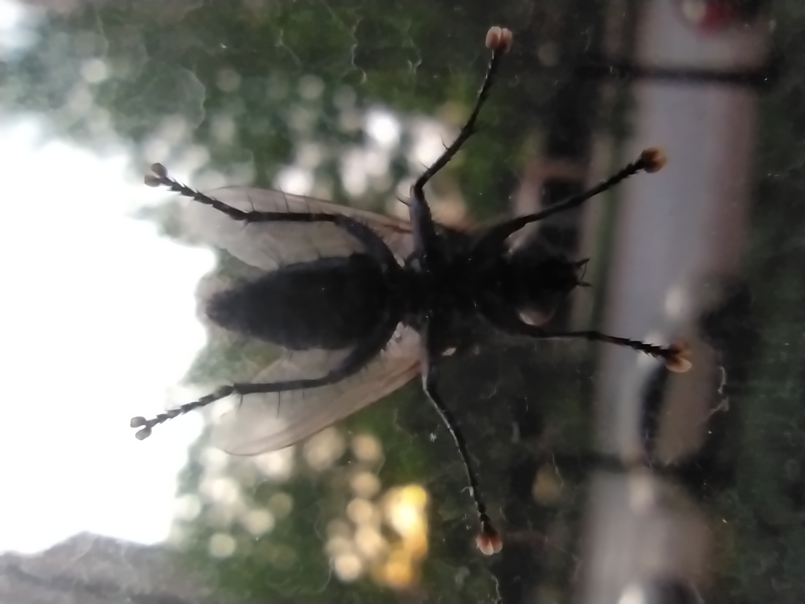
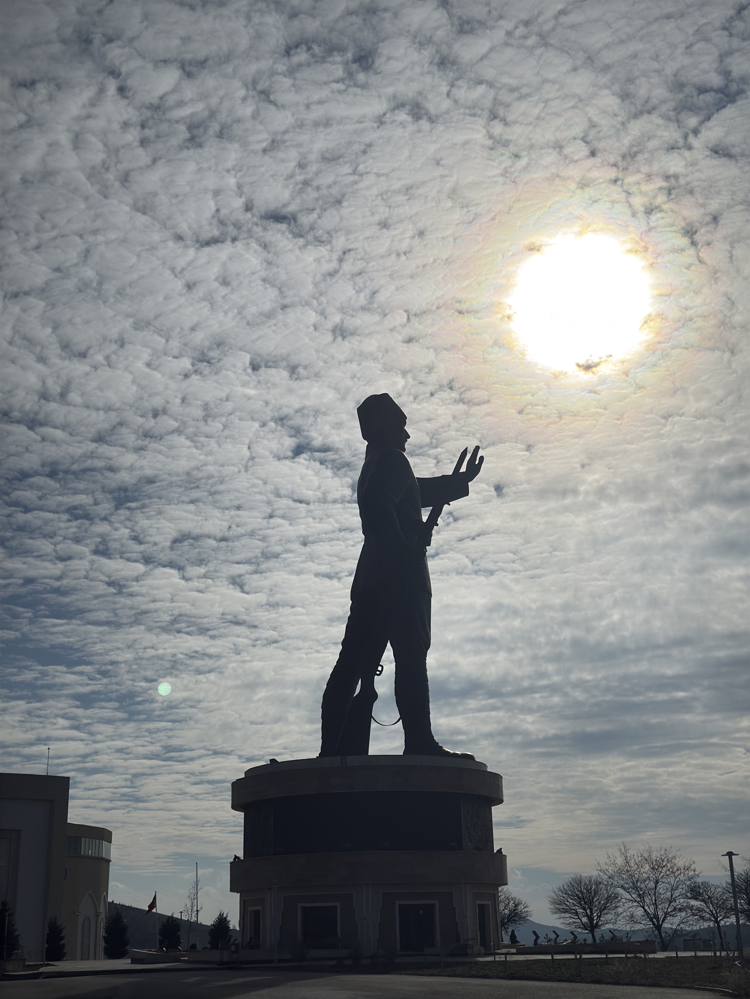

Education
🎓 Master of Artificial Intelligence Engineering
University of Passau, Germany
Graduate student pursuing advanced coursework in AI engineering, machine learning systems, and applied research, building on a foundation of production ML and data engineering work.
🎓 B.Sc. Computer Engineering
Ankara Yıldırım Beyazıt University — Graduated 2026
Capstone: AI-based health risk scoring & resource allocation. Coursework spanning data structures, algorithms, databases, machine learning, and software engineering.
Projects
Achievements

Skills & Expertise
- Languages: Python, SQL, C#, JavaScript
- Backend: ASP.NET Core, FastAPI, Flask, Node.js, PostgreSQL
- ML/Data: TensorFlow, scikit-learn, XGBoost, FastText, pandas, numpy, MLOps
- Frontend: HTML, CSS, JavaScript, React, OpenLayers
- Infrastructure: Docker, Git, PostgreSQL, PostGIS
- Concepts: OOP, SOLID, NLP, N-tier architecture, ERP customization
- Soft Skills: Teamwork, adaptability, problem-solving, English fluency
- Foundations: Linear Algebra, Probability, Statistics, Discrete Math
Photography
A curated selection of moments captured through my lens.




Get In Touch
Let's build something amazing together. Feel free to reach out!